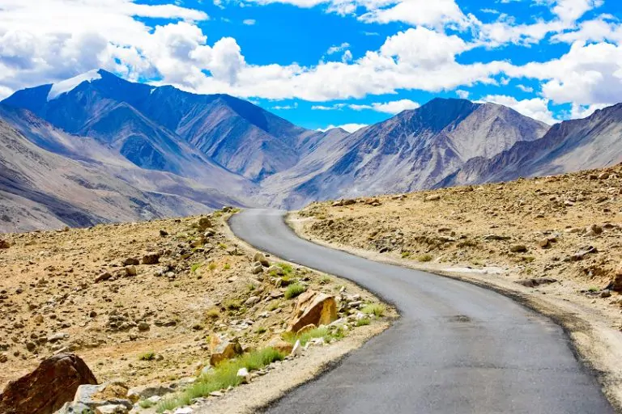
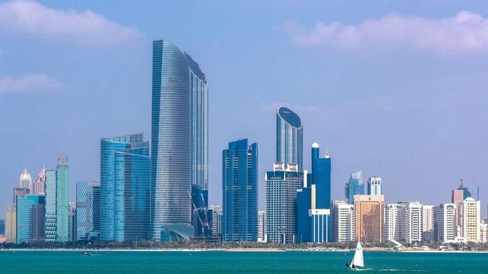

Stunning Examples
Leh Ladakh
The land of Ladakh, renowned as the cold desert, holds immense pristine beauty for its beholder.Being situated on the snow-clad fringes of the Himalayan Mountains.
Sydney
The greatest and most exciting of all cities” - rated by the Telegraph and many other media, Sydney takes pride in being considered the world`s mostbeautiful metropolis.
Abu Dhabi
Abu Dhabi, located on the island of Persian Gulf, is a collage of magnificent architecture, stunning beaches, traditional and cultural monuments.
kluane national park
Kluane National Park and Reserve is in the southwest of the Yukon, in Canada. It’s a vast wilderness of ice fields, forests and towering peaks like Mount Logan.
Zakynthos Island
Zakynthos is a Greek island in the Ionian Sea and a well-known summer resort. The harbor city of Zakynthos.

Dolomites
The Dolomites are a mountain range located in northeastern Italy. They form part of the Southern Limestone Alps.